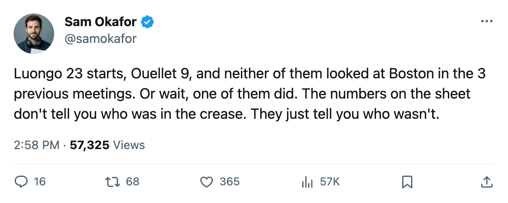

Ahead of Boston: 0-2-1, 5 Bruins out, and Luongo's 24th if he starts
The head-to-head is the only edge in the division that matters, and it belongs to them.
 Sam OkaforLeafs beat reporter · Queen City Telegram
Sam OkaforLeafs beat reporter · Queen City Telegram
 Toronto Maple Leafs visits
Toronto Maple Leafs visits  Boston Bruins on 2006-01-11 for the 4th meeting of a season series that stands 0-2-1 for Toronto: 2 regulation losses, 1 overtime loss, 7 goals for, 10 against. The lead is 14 points. Boston holds 2 games in hand. The winner tomorrow likely owns the tiebreaker.
Boston Bruins on 2006-01-11 for the 4th meeting of a season series that stands 0-2-1 for Toronto: 2 regulation losses, 1 overtime loss, 7 goals for, 10 against. The lead is 14 points. Boston holds 2 games in hand. The winner tomorrow likely owns the tiebreaker.
The lines
First:  Marian Gaborik99 right wing,
Marian Gaborik99 right wing,  Mats Sundin92 center,
Mats Sundin92 center,  Stanislav Chistov87 left wing. Gaborik has 14 points in 22 games, Sundin 35 in 42, Chistov 30 in 42.
Stanislav Chistov87 left wing. Gaborik has 14 points in 22 games, Sundin 35 in 42, Chistov 30 in 42.
Second:  Maxim Afinogenov86 right wing with 19 goals, Petr Chlup87 center with 32 points in 20.7 minutes a night,
Maxim Afinogenov86 right wing with 19 goals, Petr Chlup87 center with 32 points in 20.7 minutes a night,  Rick Nash85 left wing with 26 points in 15.7 minutes.
Rick Nash85 left wing with 26 points in 15.7 minutes.
Third:  Alexander Mogilny89 right wing,
Alexander Mogilny89 right wing,  Brad Richards87 center,
Brad Richards87 center,  Jamie Lundmark81 left wing. Lundmark is at +8 on the Bureau's Index, the 15th-highest riser in the league.
Jamie Lundmark81 left wing. Lundmark is at +8 on the Bureau's Index, the 15th-highest riser in the league.
Fourth: Scottie Upshall78 right wing, Vaclav Spacek81 center, Konstantin Koltsov73 left wing.
The other side
Boston Bruins has 5 men out.  Sergei Samsonov82 (ankle, back 2006-01-24), Stéphane Laperriere69 (shoulder, back 2006-02-22),
Sergei Samsonov82 (ankle, back 2006-01-24), Stéphane Laperriere69 (shoulder, back 2006-02-22),  Rob Zamuner67 (back, back 2006-01-30), and
Rob Zamuner67 (back, back 2006-01-30), and  Sean O'Donnell68 (neck, back 2006-01-19) carry named injuries with return dates past tomorrow. Boston's 119 goals for in 40 games is the 2nd-highest in the division.
Sean O'Donnell68 (neck, back 2006-01-19) carry named injuries with return dates past tomorrow. Boston's 119 goals for in 40 games is the 2nd-highest in the division.
Samsonov is the one to miss. The 86-overall left wing, out since late December with a bad ankle, is a top-6 scorer who doesn't come back for 13 more days.
The crease
 Roberto Luongo95 has 23 starts at 60.3 minutes a night. Maxime Ouellet86 has 9. Luongo has dressed in every game since the January calendar opened; Ouellet has not dressed since the committee went two-deep. If Luongo starts tomorrow it is his 24th of 43 games.
Roberto Luongo95 has 23 starts at 60.3 minutes a night. Maxime Ouellet86 has 9. Luongo has dressed in every game since the January calendar opened; Ouellet has not dressed since the committee went two-deep. If Luongo starts tomorrow it is his 24th of 43 games.
The swing
Tomorrow is the first of 4 road games in 8 nights.  New York Rangers on 2006-01-13, then the only home date of the stretch,
New York Rangers on 2006-01-13, then the only home date of the stretch,  Calgary Flames on 2006-01-14. After that,
Calgary Flames on 2006-01-14. After that,  Washington Capitals on 2006-01-17 and
Washington Capitals on 2006-01-17 and  Montreal Canadiens on 2006-01-18. The New York Rangers game carries a note: Jamie Lundmark visits the club he left last summer, and
Montreal Canadiens on 2006-01-18. The New York Rangers game carries a note: Jamie Lundmark visits the club he left last summer, and  Kenny Jonsson78 meets the room he was in for last June's Cup run.
Kenny Jonsson78 meets the room he was in for last June's Cup run.
The 7-1 at Pittsburgh is a good win. The shot count, 20 for against 31 against, says it was a day when the pucks found the net and the other ones didn't. That doesn't translate to Boston's rink, where the same head coach gets a full bench and 119 goals for.
